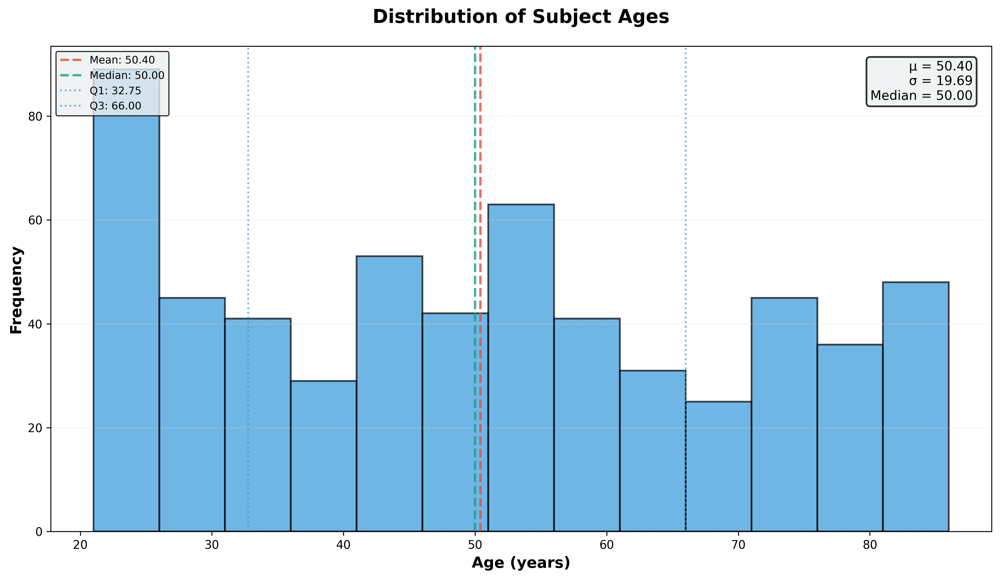
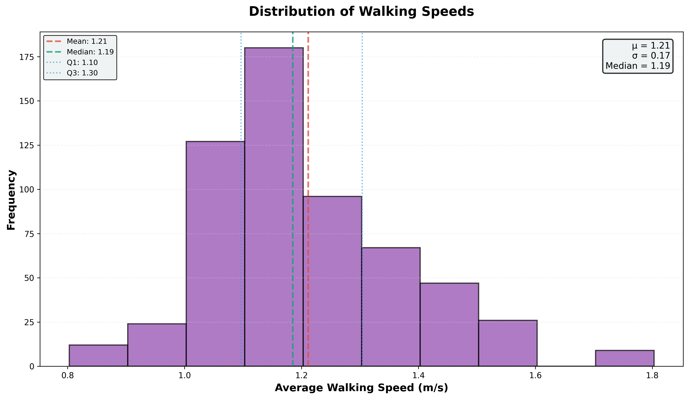

Dataset
We use the Van Criekinge dataset, a clinical gait database spanning the adult lifespan (ages 21–86), comprising 588 walking trials from 138 healthy subjects.
588
Walking Trials
138
Subjects
21–86
Age Range
100 Hz
Capture Rate
~60
Markers / Subject

Age distribution across 588 trials (mean age: 50.4 ± 19.7 years).

Distribution across age groups: Young (<30), Middle (30–50), Elderly (>50).

Age vs. walking speed. For subjects under 50, correlation is negligible (r = −0.13); for subjects over 50, a pronounced decline emerges (r = −0.51).

Walking speed distribution (mean 1.21 ± 0.17 m/s). Reduced speed in older adults is one of the primary kinematic aging signatures this work aims to model.